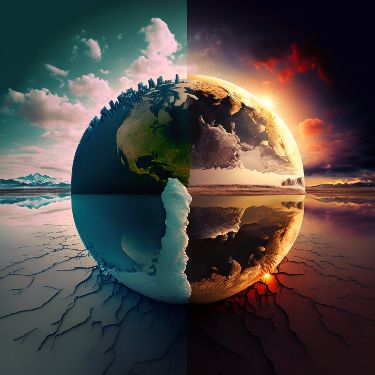
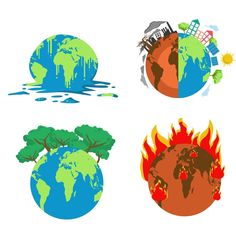
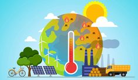

CONSECUENCIAS DEL CALENTAMIENTO GLOBAL
El calentamiento global tiene una serie de consecuencias negativas para el planeta, entre las que se encuentran:
- Aumento de la temperatura promedio global: El calentamiento global está causando un aumento en la temperatura promedio de la Tierra, lo que lleva a cambios en los patrones climáticos y fenómenos extremos como olas de calor, sequías e inundaciones.
- Derretimiento de los glaciares y casquetes polares: El aumento de la temperatura está causando un rápido derretimiento de los glaciares y casquetes polares, lo que contribuye al aumento del nivel del mar.
- Aumento del nivel del mar: El derretimiento de los glaciares y casquetes polares está causando un aumento en el nivel del mar, lo que amenaza a las comunidades costeras y a los ecosistemas marinos.
- Acidificación de los océanos: El aumento de la concentración de dióxido de carbono en la atmósfera está provocando la acidificación de los océanos, lo que afecta a los corales, moluscos y otros organismos marinos.
- Cambios en los ecosistemas: El calentamiento global estácausando cambios en los ecosistemas terrestres y marinos, lo que puede llevar a la extinción de especies y a la pérdida de biodiversidad.
- Aumento de fenómenos meteorológicos extremos: El calentamiento global está aumentando la frecuencia e intensidad de fenómenos meteorológicos extremos como huracanes, tornados e inundaciones.
- Impacto en la agricultura: El cambio climático afecta la disponibilidad de agua, el rendimiento de los cultivos y la distribución de enfermedades de las plantas y los animales, lo que pone en riesgo la seguridad alimentaria.
- Desplazamiento de poblaciones: El aumento del nivel del mar y la desertificación están obligando a comunidades enteras a desplazarse de sus hogares, lo que puede llevar a conflictos y crisis humanitarias.
En resumen, el calentamiento global representa una grave amenaza para el medio ambiente, la economía y la sociedad, por lo que es fundamental tomar medidas urgentes para mitigar sus efectos y adaptarse a los cambios que ya están en marcha.


